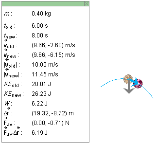

. Figure 1 below shows part of the parabolic path
of the particle, and it shows the particle in two positions that
are 2.0 s apart and data corresponding to this time interval.
. Figure 1 below shows part of the parabolic path
of the particle, and it shows the particle in two positions that
are 2.0 s apart and data corresponding to this time interval.
The following Activities are for the Work and Kinetic Energy applet. Make sure you know how the applet functions by consulting Help and ShowMe under Applet Help on the applet's Help menu.
Activity 1. The purpose of Activity 1 is to verify the Work-Kinetic Energy Theorem for parabolic motion (constant net force).
Exercise 1. Suppose a particle is moving subject to a
constant net downward force . Figure 1 below shows part of the parabolic path
of the particle, and it shows the particle in two positions that
are 2.0 s apart and data corresponding to this time interval.

Figure 1
Using the data from Figure 1, perform the following calculations to verify the Work-Kinetic Energy Theorem for this 2.0-s time interval.
as the particle
undergoes the displacement D . Note that,
since the net force is constant, = av.
. Note that,
since the net force is constant, = av.
 D. Evaluate this scalar product, and check if you
obtain the result listed in Figure 1.
D to that of
W. The two values should be exactly equal in the case of
a constant net force. However, you will notice that the two
values listed in Figure 1 differ in the second decimal. This
discrepancy is the result of round-off error due to giving the
net force to only two significant figures.
avD in general only approximates W. However,
for a constant net force, avD
D. Evaluate this scalar product, and check if you
obtain the result listed in Figure 1.
D to that of
W. The two values should be exactly equal in the case of
a constant net force. However, you will notice that the two
values listed in Figure 1 differ in the second decimal. This
discrepancy is the result of round-off error due to giving the
net force to only two significant figures.
avD in general only approximates W. However,
for a constant net force, avD old, calculate the speed at the
beginning of the interval, vold, and the
kinetic energy at the beginning of the interval,
Kold. Compare your results with the values in
Figure 1.
new.
old, new, and av
from Figure 1 are consistent by veryfing the equation
new = old + (av /m) Dt.
= av and therefore constant acceleration
av /m
old, calculate the speed at the
beginning of the interval, vold, and the
kinetic energy at the beginning of the interval,
Kold. Compare your results with the values in
Figure 1.
new.
old, new, and av
from Figure 1 are consistent by veryfing the equation
new = old + (av /m) Dt.
= av and therefore constant acceleration
av /mExercise 2. Use the applet to create a parabolic motion of your own by applying a constant net force. You may want to choose a net force that is not downward, but in some other direction. For this motion, carry out the same kinds of calculations as in Exercise 1 for one or more time steps.
Activity 2. The purpose of Activity 2 is to investigate the Work-Kinetic Energy Theorem for a motion with variable net force.
Exercise 1. Use the applet to create a motion with variable net force.
REWIND the applet and set the time step to 2.0 s. STEP FORWARD through the motion, and stop at some 2.0-s time interval. Using the values in the data box, verify that the equation of the Work-Kinetic Energy Theorem,
is satisfied.
By stepping either forward or backward to other 2.0-s intervals, you can check that the preceding equation is satisfied for all other such intervals as well. This means that the equation is also satisfied for larger intervals, e.g., 10-s intervals, because the work done and the change in kinetic energy in such an interval is the sum of the work and change in kinetic energy, respectively, in the constituent 2.0-s intervals.
The question remains: "How can we calculate the work W listed in the applet's data box using the basic definition of work?" The purpose of the following Exercise 2 is to answer this question.
Exercise 2. Continuing from Exercise 1, REWIND the applet.
STEP FORWARD through the motion. For some 2.0-s time interval,
calculate the approximate work avD done. Compare this value to that of
the exact work W listed in the data box. If the force is varying
during your time interval, the two are in general not going to be
equal.
The approximate work avD approaches the
true work W as the size of the time interval decreases.
Investigate this as follows.
Suppose t = t1 is the instant of time at
the beginning of the 2.0-s interval. REWIND the applet, and reduce
the size of the time step from 2.0 s to 1.0 s. STEP FORWARD through
the motion until avD displayed in the data box. You can
verify the latter by calculation, if you like.
Is the percentage difference between W and avD smaller for the
1.0-s interval than for the 2.0-s interval? I.e., is avD| / W
Cut the interval in half again, to 0.5 s, and repeat the comparison
between W and avD, and so on for even smaller
intervals. (The smallest interval allowed by the applet is 0.2 s.)
What do you conclude?
Exercise 3. One can learn from Exercise 2 that
approximating W by avD involves an error, but an error that
vanishes as the interval size vanishes.
This leads to the following prescription for calculating W
for some finite time interval. Divide the interval into many
smaller sub intervals, calculate avD for each of the smaller intervals,
and sum all these small approximate amounts of work to get an
approximate value for W. Repeat this by dividing the given
time interval into even more and even smaller subintervals,
calculating and summing the many small amounts avD, and so on for even more and even smaller
intervals. The resulting sequence of approximate values for
W converges to the exact value of W as the number of
subintervals goes to infinity and the size of each subinterval goes
to zero.
Suppose one divides a given 10-s time interval into one million
time intervals of 1/100000 s each, and calculates avD for each of these tiny intervals. Then the sum of
a million tiny amounts avD is going to be very close to the
true value of W for the 10-s interval.
Computers can carry out calculations like this, called numerical integration, quickly. (The word "integration" means summation.)
Activity 3. The purpose of this Activity is to investigate the Work-Kinetic Energy Theorem qualitatively.
Exercise 1. Work can be either positive or negative, depending on whether the force doing the work forms an angle less than or greater than 90o with the displacement. According to the work-kinetic energy theorem, the kinetic energy increases during a time interval for which the work is positive and decreases during a time interval for which the work is negative.
RESET the applet. Select the Force button. Generate a motion by means of the Force dial. Observe the red kinetic energy bar in relation to the angle between the black force vector and the magenta velocity vector.
Does the kinetic energy bar increase in height when the angle between the force and velocity is less than 90o, i.e., when the force generally speaking is in the "forward" direction, and decrease in height when the angle between the force and velocity is greater than 90o, i.e., when the force generally speaking is in the "backward" direction?
Activity 4. The purpose of this Activity is to repeat Activities 1 to 3 for motion along a straight line.
Exercise 1. RESET the applet. Set the applet to the 1D mode.
Repeat any of the exercises in Activities 1 to 3 using one-dimensional motions.